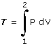

| Trabajo Si en una transformación cambia el volumen que ocupa el gas habrá un trabajo que viene dado por:  Para calcular la integral habrá que expresar la presión en función del volumen utilizando la ecuación de la transformación Importante En un diagrama P-V el trabajo es el área comprendida entre la trayectoria de la transformación y el eje de abscisas (V). Si di-cha trayectoria fuera una recta se podría hallar el trabajo calcu-lando el área por geometría. Por ejemplo, en el caso de una transformación isobara:
|